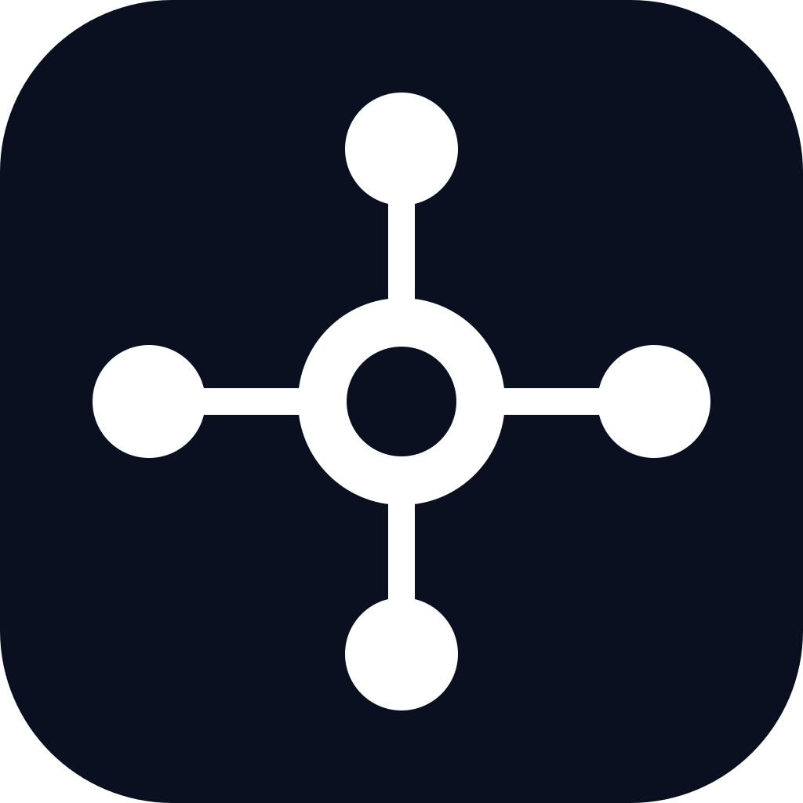

PROJECT CONTEXT PROTOCOL
Stop restarting your AI project every chat.
A portable context architecture that helps any LLM recover current state, respect prior decisions, use the right skills, and work from authoritative project knowledge.

Instructions
How the model must work.
Knowledge
Facts, specs, architecture and sources.
Skills
Repeatable procedures and governed methods.
State
The latest verified checkpoint and next action.
Chats are working sessions. Project files are durable operating context.